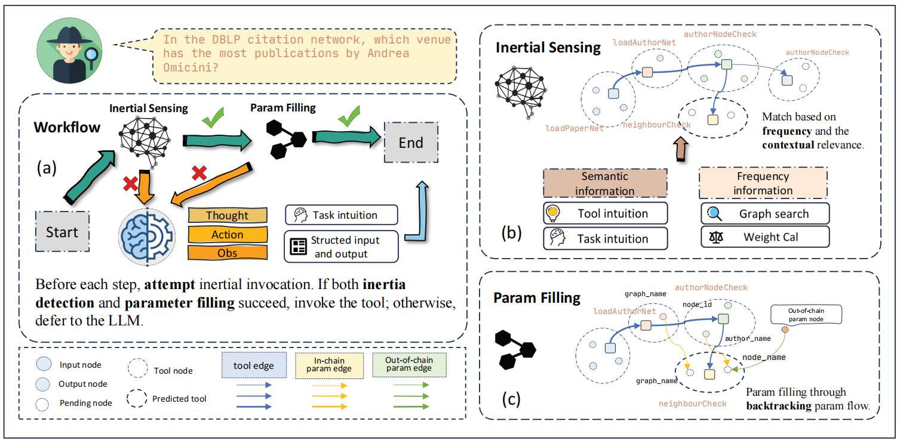

I am a Ph.D. student at Huazhong University of Science and Technology (HUST), advised by Prof. Qinbin Li. I received my B.Eng. degree from HUST in 2026.
My research focuses on large language model systems and efficient agent frameworks. I am also exploring AI for Science (AI4S), particularly proteins and drug discovery, and welcome collaboration opportunities in this area.
Motivation Can structure-semantic separation break the monolithic LLM agent loop by moving verifiable execution into the runtime?
Method MotifAgent uses executable motif graphs for structure-semantic separation: structural operations execute verified tool flows, semi-structural operations mediate missing information within graph constraints, and semantic operations resolve ambiguity with the LLM. Motif progress also guides scheduling and KV-cache retention.

Motivation Can we utilize statistical methods instead of relying heavily on LLM inference to select tools efficiently?
Contribution We propose AutoTool, which actively manages tool usage inertia via a Tool Inertia Graph. By selectively bypassing LLM inference, it reduces token consumption by up to 30% while maintaining competitive performance.